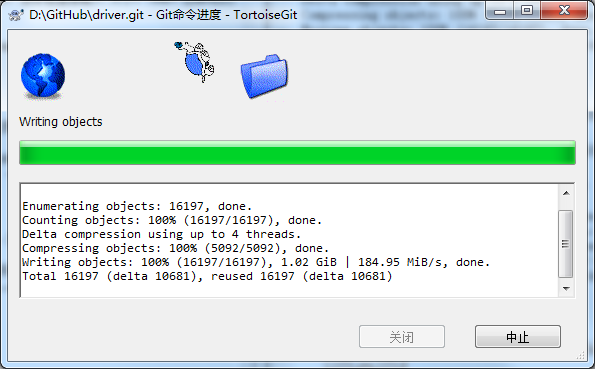

删除GIT历史记录中的大文件或敏感信息文件
删除Git中已不慎提交了的敏感文件，如包含了数据库密码、信用卡资料等的敏感信息文件，或超过100M的大文件
删除之后，版本历史中仍然会留下该文件，并且会记录下你欲盖拟彰的删除操作。只要将版本回到你删除之前的节点，就能直接获取到你删除的敏感文件。
所以，只有将历史版本中的该文件一并删除，才能解决问题。
itHub 官方推荐两种方式来删除历史，一种是 Git 的 git-filter-branch，一种是专门用于处理这类问题的开源软件 BFG。
Repo-Cleaner(BFG)：Java开源软件，可用于删除GIT历史记录中的敏感信息文件，简单易用快速。
Git命令git-filter-branch：用于删除GIT历史记录中超过100M的文件，或当如果BFG不能成功时，强大但较慢较难学。
- 下载BFG Repo-Cleaner(BFG)：BFG 官网及官方教程 https://rtyley.github.io/bfg-repo-cleaner/
- 删除仓库上的项目，重新提交代码：一定要把想删除的文件先 delete -> commit
一定要把想删除的文件先 delete，接着 commit and push 到远程服务器，再进行 clone。
否则若文件依旧存在于 Head 中，则会报如下错误，由于该文件被保护而无法删除。
- 克隆一个新的仓库
- 彻底清除历史记录：使用bfg删除对应文件:cmd->cd D:\GitHub->D:->java -jar bfg.jar
--delete-files 02_src\02_Common\APR\docs\ACE\ACE_wrappers.zip driver.git
也可用：java -jar bfg.jar --strip-blobs-bigger-than 100M PaaS.Device.Driver-object
- 使用gc命令删除目标数据(清理无用object )
先进入仓库文件夹:
cd driver.git在仓库文件夹中进行:
git reflog expire --expire=now --all && git gc --prune=now --aggressive - 提交修改，失败
Q：RPC failed; curl 56 OpenSSL SSL_read: SSL_ERROR_SYSCALL, errno 10054 Everything up-to-date
A：git config --global http.postBuffer 2048576000
Q：D:\GitHub\driver.git>git push fatal: The current branch master has no upstream branch. To push the current branch and set the remote as upstream, use git push --set-upstream origin master
A：D:\GitHub\driver.git>git push --set-upstream origin master 具体原因： 出现这种情况主要是由于远程仓库太多，且分支较多。在默认情况下，git push时一般会上传到origin下的master分支上，然而当repository和branch过多，而又没有设置关联时，git就会产生疑问，因为它无法判断你的push目标。 解决办法其实就是确定这两个值，方法有两种： 第一种如上图中的提示：git push --set-upstream origin master。其中的origin是你在clone远程代码时，git为你创建的指向这个远程代码库的标签，它指向repository。为了能清楚了解你要指向的repository，可以用命令git remote -v进行查看。master是你远程的branch，可以用git branch -a查看所有分支，远程分支是红色的部分。然后确定好这两个值后，将值换掉即可。 另一种方法是：git push -u origin master。同样根据自己的需要，替换origin和master。 两个命令的区别是第一条命令是要保证你的远程分支存在，如果不存在，也就无法进行关联。而第二条指令即使远程没有你要关联的分支，它也会自动创建一个出来，以实现关联。
最后，提交仍然失败，需要使用其他方法了。
- 使用Win 7 资源管理器直接查看超过99M的大文件：搜索框直接输入:大小：>99m。这样可以查到所有的大文件信息如下图。由于Git中会对大文件进行打包，生成git
pack格式的.pack文件以及对应的同名的.idx文件，存放在.git/object/pack目录中。通常来说，Git仓库的大文件都是.pack格式的。因此可初步识别出大文件对象。
- 使用Git命令git-filter-branch彻底清除历史记录：查找大文件并定位，再删除历史记录，
也可用通配符：$ git verify-pack -v .git/objects/pack/pack-*.idx | sort -k 3 -g | tail -5
进入.git文件夹 cd .git 查看打包文件*.pack的内容，并从中识别出最大的20个文件 $ git verify-pack -v objects/pack/pack-8ff17fbd5c3aa53fa5543200c2023d809b56f47a.idx | sort -k 3 -n |tail -n 20 57785234ce3663597aa6d151e1c5fc39b9b11ca8 blob 18591627 18550720 419964438 5872b3c1b7031c823eea034597f6c9ad977dd7bd blob 19168607 19082020 14274499 10de5830e2ba064d2461b24520ecc7b9155e3d90 blob 19979038 19812978 1983023760 ecbd56edb9e615b2fdba90a0c7593378b641e36c blob 20087697 19784290 1953470522 baeb69fea3224d0748702a0397bff5d248e4e0ab blob 20948352 19210289 145979260 c354d7dad46d2ab23339794c84d90cb063cd7051 blob 21142429 21148398 602469844 d90c2c38474148124776114c9346b38d28c23679 blob 21257947 21236016 167469360 82f59838635b21f1dfd202ee239a2ab24d32e490 blob 31236077 31203333 215964974 83598dd69f160bcab1e824e32ebec964f3449281 blob 32009623 31950622 365560815 743dceab06aca5e331531895b89e317dca44418e blob 32853253 30702735 2003568292 7f68529e8b8083000a8381a3f2e9e6c5894a4ed9 blob 36795332 36485437 33356519 0937433c154a6764f68e7c13088bb710e4a515ee blob 39779641 39789184 638446669 81d460019a610e5e03a6fbe2d5a0f86e6df3a216 blob 41154834 41141193 541881891 dbd22a2d1d4819fa7f5d6b8b4c93e598c455dfc8 blob 41392307 41312424 1877679424 359d1a8f653f29b1a06440925839e344b4578c51 blob 42719732 42377261 69841956 653cb0cb7f2b8eeda447f558099fc86d2142b5ab blob 86460130 86370105 254513427 bf0d1a3c364eb068fd29290fd784f7131b6e9f6e blob 90000705 89667583 704201727 5cf9e5d7b311fdbf4b70d261e7d1766d3eab8e3d blob 95380694 95276785 442213142 a4bf88381f84c637c2fc59144141eeca6dda5f32 blob 402363233 387428279 1484694551 0a364758ee92503494d9eaf4b80b2c0e2c2a3df0 blob 652581529 651145773 833548679 查询大文件的对应文件名 $ git rev-list --objects --all |grep 0a364758ee92503494d9eaf4b80b2c0e2c2a3df0 0a364758ee92503494d9eaf4b80b2c0e2c2a3df0 02_src/02_Common/10_APR.rar $ git rev-list --objects --all |grep a4bf88381f84c637c2fc59144141eeca6dda5f32 a4bf88381f84c637c2fc59144141eeca6dda5f32 02_src/02_Common/APR/docs/ACE/ACE_wrappers.zip 找出修改这个文件的所有commit(非必要步骤，仅为谨慎操作) $ git log --pretty=oneline -- 02_src/02_Common/10_APR.rar 27f9e469b712d2234e9d5cbad3d2d490d7a4b3b9 Plugin_Bridge_Driver初始版本迁入 87197a8cf42e5d348a4c410f53b9cca3544ed0cd APR和log4cxx迁移到common目录，分离出COM_Bridge和Socket_Bridge $ git log --pretty=oneline -- 02_src/02_Common/APR/docs/ACE/ACE_wrappers.zip 27f9e469b712d2234e9d5cbad3d2d490d7a4b3b9 Plugin_Bridge_Driver初始版本迁入 87197a8cf42e5d348a4c410f53b9cca3544ed0cd APR和log4cxx迁移到common目录，分离出COM_Bridge和Socket_Bridge 重写所有修改这个文件的提交 $ git filter-branch --index-filter 'git rm --cached --ignore-unmatch 02_src/02_Common/10_APR.rar' -- --all ... dicted) rm '02_src/02_Common/10_APR.rar' Rewrite 1aae4219c6b15afaa244de519100316d12d60109 (112/117) (42 seconds passed, remaining 1 pre dicted) rm '02_src/02_Common/10_APR.rar' Rewrite 95a9fcb2b6673e38ff72e1707924dfb71c110a20 (112/117) (42 seconds passed, remaining 1 pre dicted) rm '02_src/02_Common/10_APR.rar' Rewrite b9f39d3a0954dd203197e76b0154f86260b58ed4 (112/117) (42 seconds passed, remaining 1 pre dicted) rm '02_src/02_Common/10_APR.rar' Rewrite ed662b7488432a8eadc28db6059eb0a804f92594 (115/117) (43 seconds passed, remaining 0 pre dicted) rm '02_src/02_Common/10_APR.rar' Rewrite 27f9e469b712d2234e9d5cbad3d2d490d7a4b3b9 (115/117) (43 seconds passed, remaining 0 pre Rewrite fa6c8f83bf7c0d9ef3414daf5dad4c92c825e6a1 (115/117) (43 seconds passed, remaining 0 pre dicted) Ref 'refs/heads/master' was rewritten $ rm -Rf refs/original $ rm -Rf logs $ git gc Enumerating objects: 16201, done. Counting objects: 100% (16201/16201), done. Delta compression using up to 4 threads. Compressing objects: 100% (5147/5147), done. Writing objects: 100% (16201/16201), done. Total 16201 (delta 10684), reused 16044 (delta 10630) $ git filter-branch --index-filter 'git rm --cached --ignore-unmatch 02_src/02_Common/APR/docs/ACE/ACE_wrappers.zip' -- --all ... Rewrite 6a5e15ea6b18e2afe8eec70cc6942f7165e07a14 (112/117) (43 seconds passed, remaining 1 predicted) rm '02_src/02_Common/APR/docs/ACE/ACE_wrappers.zip' Rewrite 031d80f6673b030ec1a60992666895e0f6fe86f8 (112/117) (43 seconds passed, remaining 1 predicted) rm '02_src/02_Common/APR/docs/ACE/ACE_wrappers.zip' Rewrite ee728bb5da317b128c0df2581f7de40f39b2b7fc (112/117) (43 seconds passed, remaining 1 predicted) rm '02_src/02_Common/APR/docs/ACE/ACE_wrappers.zip' Rewrite 014b2e92d685b4adec5bb10d2caf2c26f13a3937 (115/117) (45 seconds passed, remaining 0 predicted) rm '02_src/02_Common/APR/docs/ACE/ACE_wrappers.zip' Rewrite 77beca013aa490845ad986e7edbe6ade82483d25 (115/117) (45 seconds passed, remaining 0 predicted) Ref 'refs/heads/master' was rewritten $ git gc Enumerating objects: 16197, done. Counting objects: 100% (16197/16197), done. Delta compression using up to 4 threads. Compressing objects: 100% (5146/5146), done. Writing objects: 100% (16197/16197), done. Total 16197 (delta 10681), reused 16045 (delta 10627) - 使用GIT命令行再次推送，但卡在如下界面很久，查看网络流量为0，怀疑推送失败，故使用Ctrl+C中止命令行
$ git push --set-upstream origin master Enumerating objects: 16197, done. Counting objects: 100% (16197/16197), done. Delta compression using up to 4 threads. Compressing objects: 100% (5092/5092), done. Writing objects: 100% (16197/16197), 1.02 GiB | 212.27 MiB/s, done. Total 16197 (delta 10681), reused 16197 (delta 10681)可使用360网络监控工具绿色版等工具查看当前网络流量；以确保使用命令行投送网络传送顺畅未卡死。如流量为0时可退出命令行，直接使用TortoiseGit GUI推送。

- 直接使用TortoiseGit GUI推送，依然错误卡在：

最后，因为Writing objects的速度过快，怀疑是本地缓存未更新，于是重新启动电脑，再次直接使用TortoiseGit GUI推送。Writing objects的速度恢复为正常的100K+/s，传了大半个小，成功。
- .git文件过大，github仓库瘦身：清除冗余的object文件，重新打包pack文件
搜索>90m的文件，发现两个object文件很大，怀疑是冗余失联文件，遂开始分析
1.识别出最大的三个文件： 可以指定pack文件查询： $ git verify-pack -v objects/pack/pack-5d0bc5d9a5e634e14541d7bd3bf1f59f52a441f6.idx | sort -k 3 -n |tail -n 20 1c4ecc0fa6c84e8d71251ad7beddaa3f46aff777 blob 14335650 14180547 899703731 ... 5cf9e5d7b311fdbf4b70d261e7d1766d3eab8e3d blob 95380694 95276785 442213272 $ git verify-pack -v objects/pack/pack-17e94657cbcff10620b449c018d40831cbbd25d7.idx | sort -k 3 -n |tail -n 20 a1eddb69a72eb440f4b7c5b77516127891467a2d blob 27313013 27029874 882707060 .... 282289952fd95d757191429e495b8b101670a0fc blob 124821644 120653183 1151703332 1ec39155a2e4203dc6ca03aca44d4907228ed167 blob 131927836 131829408 144343318 1806855dc280bb29725f83a470d167a3e1cdaefc blob 157904427 157846979 475100532 0f08b8987e4b7ceada3496b92761cf22801a87ae blob 273502208 60252128 140473 而且可以直接按通配符进行查询： $ git verify-pack -v .git/objects/pack/pack-*.idx | sort -k 3 -g | tail -5 5cf9e5d7b311fdbf4b70d261e7d1766d3eab8e3d blob 95380694 95276785 442213272 282289952fd95d757191429e495b8b101670a0fc blob 124821644 120653183 1151703332 1ec39155a2e4203dc6ca03aca44d4907228ed167 blob 131927836 131829408 144343318 1806855dc280bb29725f83a470d167a3e1cdaefc blob 157904427 157846979 475100532 0f08b8987e4b7ceada3496b92761cf22801a87ae blob 273502208 60252128 140473 查询大文件的文件名：以下查询无结果，表示之前怀疑的object确实已失联冗余 git rev-list --objects --all |grep 282289952fd95d757191429e495b8b101670a0fc git rev-list --objects --all |grep 1ec39155a2e4203dc6ca03aca44d4907228ed167 git rev-list --objects --all |grep 1806855dc280bb29725f83a470d167a3e1cdaefc git rev-list --objects --all |grep 0f08b8987e4b7ceada3496b92761cf22801a87ae 2.删除大文件及其历史记录：将超过100m文件从历史记录的所有 tree 中移除，也可用bfg快速删除大文件 java -jar bfg.jar --strip-blobs-bigger-than 100M PaaS.Device.Driver-object 也可用：git filter-branch -f --prune-empty --index-filter 'git rm -rf --cached --ignore-unmatch <file.src>' --tag-name-filter cat -- --all 3.重构pack与gc：依次执行以下命令，便可删除已失联冗余object文件 rm -rf .git/refs/original/ git reflog expire --expire=now --all $ git fsck --full --unreachable Checking object directories: 100% (256/256), done. Checking objects: 100% (39412/39412), done. unreachable blob 0600042c7a2a6c6df8a55ea74a345d2a592e5bf2 unreachable blob 31009c67352ebb700da7630dc3dfe2a4eece7c95 ... unreachable blob a4bf88381f84c637c2fc59144141eeca6dda5f32 ... unreachable blob 0a364758ee92503494d9eaf4b80b2c0e2c2a3df0 ... unreachable blob b3ff6d87377630285e48789ff2101fa8ad068ead unreachable blob eaffff18679df2b1b225c78ffa09c5c3bf2988ad $ git repack -A -d Enumerating objects: 34252, done. Counting objects: 100% (34252/34252), done. Delta compression using up to 4 threads. Compressing objects: 100% (15867/15867), done. Writing objects: 100% (34252/34252), done. Total 34252 (delta 17972), reused 33965 (delta 17706) Removing duplicate objects: 100% (256/256), done. $ git gc --aggressive --prune=now Enumerating objects: 34252, done. Counting objects: 100% (34252/34252), done. Delta compression using up to 4 threads. Compressing objects: 100% (33573/33573), done. Writing objects: 100% (34252/34252), done. Total 34252 (delta 19918), reused 14203 (delta 0) 推送 $ git push --force Everything up-to-date